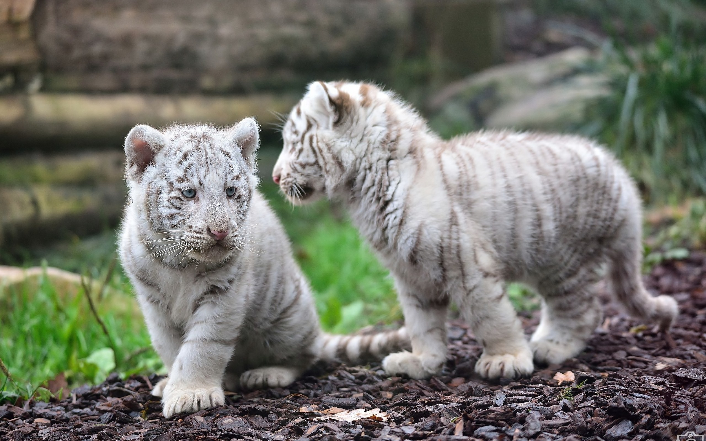
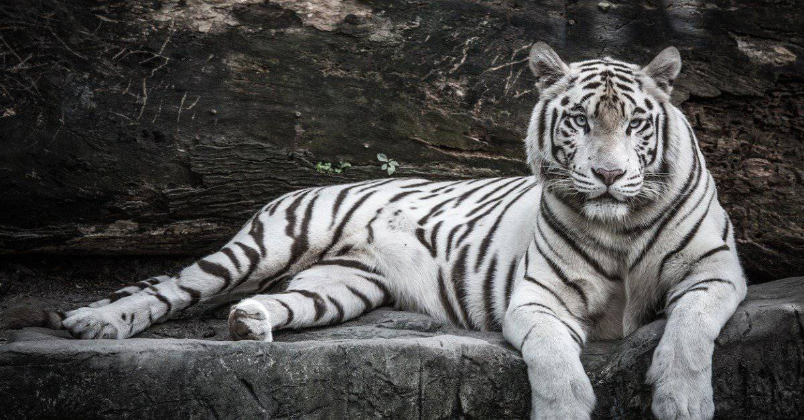
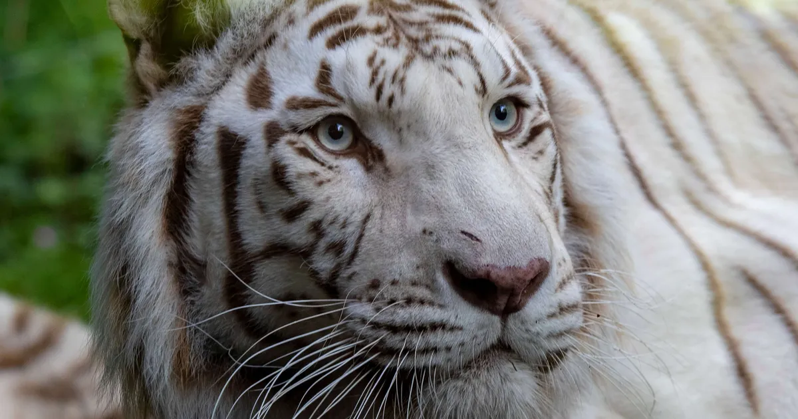
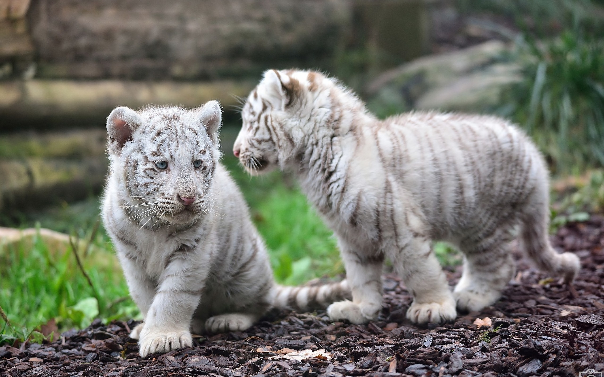
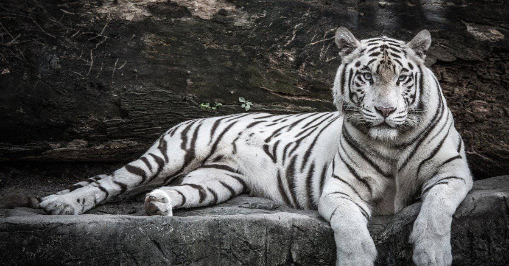
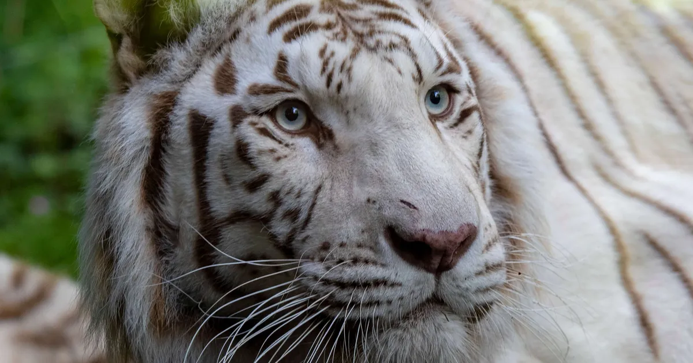

White tiger
White tigers are a variation of Siberian or Bengal tigers that exhibit a genetic mutation that causes a complete or partial absence of pigmentation in the coat. Because of this, their skin is light cream or white with black stripes, and their eyes can be blue or green.
White tigers are very rare and are considered rare in the wild. This feature makes them even more attractive for zoos and captive breeding. Despite their beauty, white tigers may have difficulty surviving in the wild due to their distinctive coloration, which can attract the attention of predators or make it difficult to hunt.
Like other tigers, white tigers are powerful predators and are at the top of the food chain. They have strong jaws, sharp claws, and excellent hunting skills. They can swim, jump long distances and develop great speed while running.
Like other tigers, white tigers are solitary animals and have large territories which they mark as their own. They can live in a variety of environments, including forests, jungles, and mountainous areas.
The conservation of white tigers is important as their numbers are declining due to habitat loss and illegal hunting. Many organizations and zoos are involved in the white tiger breeding and conservation program to preserve this unique subspecies.
White tigers represent wild beauty and impress with their features. The study and conservation of these magnetic predators helps highlight the importance of preserving our planet's wildlife and biodiversity.
 




